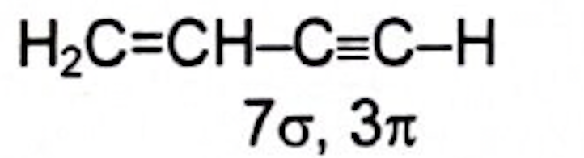

FIITJEE CHEMISTRY GOC AND ISOMERISM : DAY 9
SUBJECTIVE
(i) 1(sp) > 3(sp²) > 2(sp³)
(ii) 4(sp) > 5(sp²) > 6(sp³)
CH₂ = C = CH₂, sp², sp, sp² respectively
(a) Structure of 2, 2 - dimethyl pentane with labeled carbons:

(b) Structure of 1 - Bromo - 2, 4 - dimethyl pentane with labeled
carbons:

OBJECTIVE
'C' attached to one more carbon is called primary carbon.
Ans = A

Ans = B
When double and triple bonds are in identical positions, double bond is preferred to triple bond.
Ans = D
'C' attached to 3 different carbons is called tertiary carbon.
Ans = B
Species containing the same number of electrons are called isoelectronic species.
\(\text{NH}_3: 7 + 3 = 10\)
\(\text{CH}_3^-: 6 + 3 + 1 = 10\)
Ans = C
1°, 2°, 3° and quaternary carbons are present.
Ans = D
Ans = B
Ans = A
Ans = C
\(\text{BP} \propto\) intermolecular forces.
\(\propto\) number of 'C' atoms.
With an increase in the number of branches, the molecule becomes more spherical, decreasing the boiling point.
Ans = D
Ans = B
Ans = A